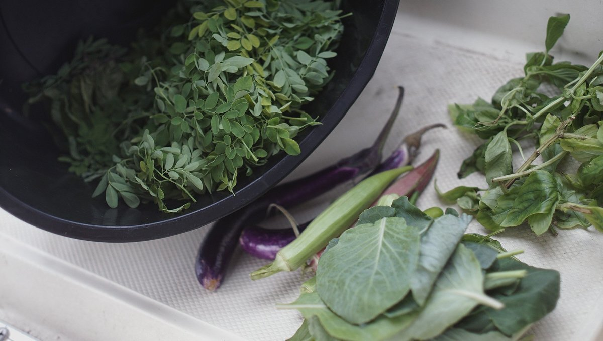

diet
People are fed by the food industry, which pays no attention to health, and are treated by the health industry, which pays no attention to food. — Wendell Berry
Our diet consists solely of plants (legumes, fruits, grains, seeds, vegetables etc). The content of our meals depend on the season and our location. We look at the adaptation and adoption of local produce as an exercise in creativity. Most processed food will come thickly packaged, and so to limit our waste we tend to avoid them.
Below is a list of rules that we go by, when it comes to choosing what to eat:
- 1. Eat varied foods. Biodiversity in the diet means less monoculture in the fields.
- 2. Pay more. Spend more for foods grown or raised less intensively and with more care.
- 3. Eat mostly plants. Especially leafy greens.
- 4. Cook, instead of eating out. If you can, plant a garden.
- 5. Avoid processed foods. They cost more, and aren't as nutritious.
- 6. Eat local seasonal ingredients. Roots in the winter, greens in the summer.
- 7. Preserve, and ferment. For health, but also to enjoy foods out of season.
Remember, food ought to be regarded primarily as source of nourishment and pleasure, don't aim for perfection.
We eat a plant-based diet for health, ethical and environmental reasons.
Appropriately planned plant-based diets are healthful, nutritionally adequate, and may provide health benefits in the prevention and treatment of certain diseases. See our detailed guide to plant-based nutrition(GrimGrains).